Acalypha wilkesiana LAG-226
Keep the stepped rows. Intermediate plants have their own smaller pots; developed plants have larger floor pots.
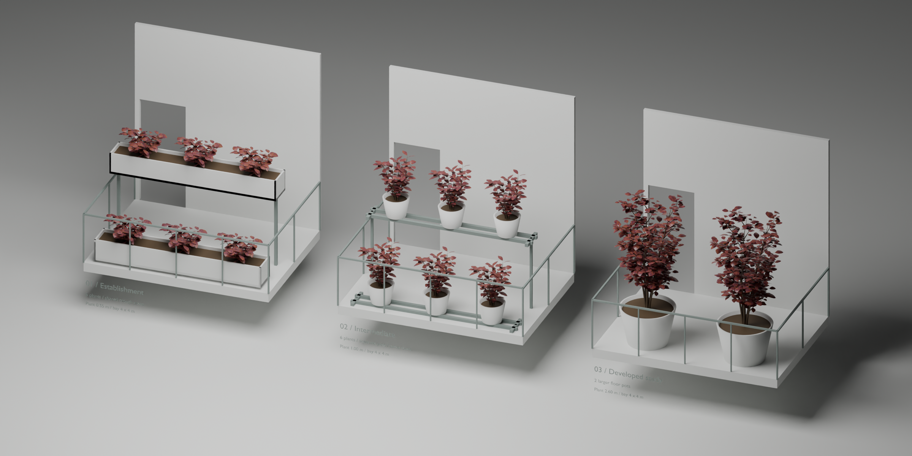
Full image
| Stage | Arrangement | Plant height / m | Crown X x Y / m |
|---|
| 01 | 6 plants / shared trough rows | 0.550 | 0.940 x 0.991 |
| 02 | 6 plants / separate pots / same rows | 1.000 | 0.943 x 0.976 |
| 03 | 2 larger floor pots | 2.601 | 1.538 x 1.524 |
This first bay holds 6 plants. The developed view holds 2. Keeping all original plants requires 3 receiving bays at that density.
Individual middle-stage pots preserve separate rootballs. The first move out of shared soil must happen before roots interlock. The exact transfer point needs a root inspection.
Modelled container provision
External dimensions and calculated growing-medium capacity. These are proposed provisions, not verified plant requirements. Shared-bed volume is for the whole bed.
| Stage | Holder | Outside size | Medium depth | Medium volume |
|---|
| 01 | Shared trough | 3.60 x 0.55 x 0.46 m | 0.34 m | 576 L |
| 02 | Round pot | diameter 0.56 x height 0.42 m | 0.30 m | 36 L |
| 03 | Round pot | diameter 1.16 x height 0.80 m | 0.68 m | 439 L |
Plant requirements and sources
- Light: Full sun gives stronger leaf colour; light shade is tolerated. Compare the same cultivar before judging colour differences.
- Water: Keep the root zone consistently moist and drained. Leaf fall can accompany unsuitable moisture conditions.
- Roots and soil: Use a porous growing medium rather than a sealed wet pocket. RHS recommends a peat-free potting compost for protected cultivation.
- Space and growth: This is a branching shrub, not a low bedding plant. Allow the foliage to expand beyond the stem rather than using nursery height as its final size.
- Season and reproduction: Male and female flowers occur separately on the same plant. Propagation by cuttings is suitable for retaining a selected foliage form.
- Establishment and care: Pinching stem tips encourages bushier growth. Inspect leaf undersides when bringing new plants into the study.
Clerodendrum paniculatum LAG-250
Root suckering does not establish a permanent-bed requirement. Use removable pots and monitor spreading.
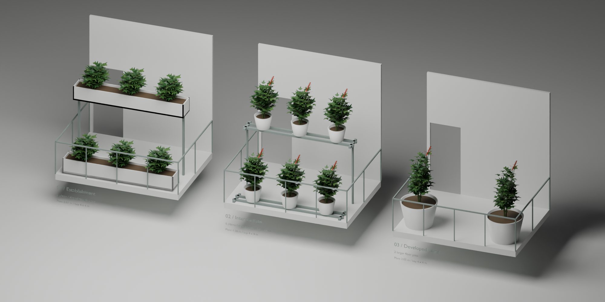
Full image
| Stage | Arrangement | Plant height / m | Crown X x Y / m |
|---|
| 01 | 6 plants / shared trough rows | 0.874 | 0.904 x 1.058 |
| 02 | 6 plants / separate pots / same rows | 1.500 | 0.967 x 1.009 |
| 03 | 2 larger floor pots | 2.051 | 0.875 x 0.898 |
This first bay holds 6 plants. The developed view holds 2. Keeping all original plants requires 3 receiving bays at that density.
NParks supports replanting young suckers, not a rule that the plant must remain in a bed. The two developed specimens are spaced 2.80 m apart, within its published 2.5-3 m landscape guidance. Young rows remain a nursery arrangement; final pot capacity still needs checking.
Modelled container provision
External dimensions and calculated growing-medium capacity. These are proposed provisions, not verified plant requirements. Shared-bed volume is for the whole bed.
| Stage | Holder | Outside size | Medium depth | Medium volume |
|---|
| 01 | Shared trough | 3.60 x 0.55 x 0.46 m | 0.34 m | 576 L |
| 02 | Round pot | diameter 0.56 x height 0.42 m | 0.30 m | 36 L |
| 03 | Round pot | diameter 1.16 x height 0.80 m | 0.68 m | 439 L |
Plant requirements and sources
- Light: NParks recommends full sun. Record shade from surrounding structures before judging flower production.
- Water: Moderate water is recommended, with moist, drained soil. Reported drought tolerance does not set the limit for a small container.
- Roots and soil: Root cuttings and suckers are propagation routes. These make below-ground spread an important part of the container study.
- Space and growth: Profiles describe shrubs of different heights in cultivation and naturalised settings. Draw the full leaves and flower panicle rather than only the stem.
- Season and reproduction: Seed, stem cuttings, root cuttings and suckers are listed. Record the material used because it affects the start of the trial.
- Establishment and care: Inspect large leaves for damage and sap-feeding insects. Keep a record of new shoots outside the intended footprint.
Codiaeum variegatum LAG-254
Keep the row arrangement while separating intermediate rootballs into removable round pots.
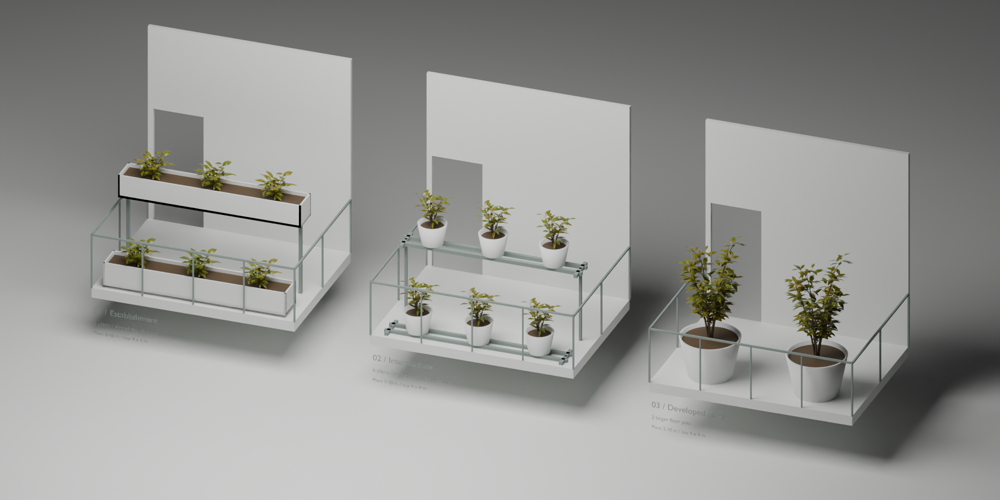
Full image
| Stage | Arrangement | Plant height / m | Crown X x Y / m |
|---|
| 01 | 6 plants / shared trough rows | 0.476 | 0.810 x 0.721 |
| 02 | 6 plants / separate pots / same rows | 0.900 | 0.721 x 0.783 |
| 03 | 2 larger floor pots | 2.101 | 1.358 x 1.248 |
This first bay holds 6 plants. The developed view holds 2. Keeping all original plants requires 3 receiving bays at that density.
Individual middle-stage pots preserve separate rootballs. The first move out of shared soil must happen before roots interlock. The exact transfer point needs a root inspection.
Modelled container provision
External dimensions and calculated growing-medium capacity. These are proposed provisions, not verified plant requirements. Shared-bed volume is for the whole bed.
| Stage | Holder | Outside size | Medium depth | Medium volume |
|---|
| 01 | Shared trough | 3.60 x 0.55 x 0.46 m | 0.34 m | 576 L |
| 02 | Round pot | diameter 0.56 x height 0.42 m | 0.30 m | 36 L |
| 03 | Round pot | diameter 1.16 x height 0.80 m | 0.68 m | 439 L |
Plant requirements and sources
- Light: Bright light supports stronger leaf colour. Excessive shade can be followed by loss of lower leaves.
- Water: Provide moisture while allowing surplus water to leave the root zone. Moderate water is a category, not a fixed daily amount.
- Roots and soil: A humus-rich, well-drained medium suits cultivation. Root depth and root spread are not established by these profiles.
- Space and growth: NParks describes a shrub reaching about 3 m. A nursery specimen needs both future crown space and a plan for size control.
- Season and reproduction: Stem cuttings and air layering are listed propagation methods. The study should retain one cultivar rather than mixing leaf forms as if they respond identically.
- Establishment and care: Inspect new foliage for spider mites. Wear suitable protection during handling because cut stems release irritating sap.
Gardenia jasminoides LAG-289
Individual pots throughout. Increase size when roots need space; minimise root disturbance.
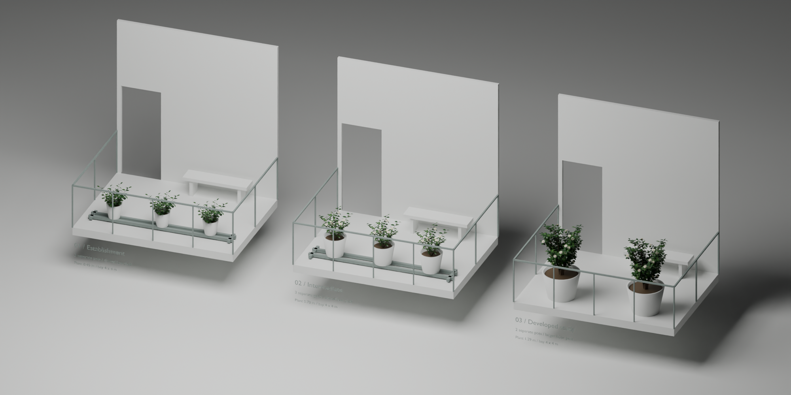
Full image
| Stage | Arrangement | Plant height / m | Crown X x Y / m |
|---|
| 01 | 3 separate pots / shared low shelf | 0.454 | 0.839 x 0.826 |
| 02 | 3 separate pots / shared low shelf | 0.700 | 0.846 x 0.845 |
| 03 | 2 separate pots / larger floor pots | 1.289 | 1.054 x 1.016 |
This first bay holds 3 plants. The developed view holds 2. Keeping all original plants requires 2 receiving bays at that density.
Gardenia can be repotted when roots nearly fill its pot (NYBG). Individual pots from the start are our response to its root-disturbance sensitivity (NC State). The source does not prescribe these dimensions.
Modelled container provision
External dimensions and calculated growing-medium capacity. These are proposed provisions, not verified plant requirements. Shared-bed volume is for the whole bed.
| Stage | Holder | Outside size | Medium depth | Medium volume |
|---|
| 01 | Round pot | diameter 0.38 x height 0.35 m | 0.23 m | 10 L |
| 02 | Round pot | diameter 0.56 x height 0.48 m | 0.36 m | 43 L |
| 03 | Round pot | diameter 0.90 x height 0.65 m | 0.53 m | 194 L |
Plant requirements and sources
- Light: Compare bright filtered light with a sunnier position. Record leaf condition and flowers because the institutional profiles differ in their exposure guidance.
- Water: Maintain moisture with free drainage. Moderate drought tolerance in a landscape does not establish a safe drying interval in a pot.
- Roots and soil: Use rich acidic soil. Shallow roots are sensitive to disturbance and competition from tree roots.
- Space and growth: Choose the cultivar before drawing final height and width. Gardenias range from low forms to sizeable shrubs.
- Season and reproduction: Propagation includes cuttings, layering, grafting and seed. Pruning decisions must account for the growth carrying flowers.
- Establishment and care: Check water and medium pH when leaves turn pale. Concrete nearby can make the root setting too alkaline.
Hibiscus rosa-sinensis LAG-294
Shared troughs, then separate pots in the same rows. Individual rootballs simplify later potting-on.
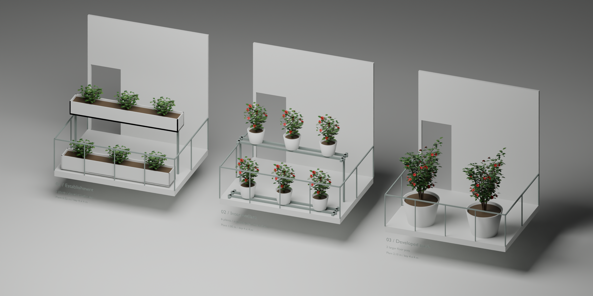
Full image
| Stage | Arrangement | Plant height / m | Crown X x Y / m |
|---|
| 01 | 6 plants / shared trough rows | 0.520 | 0.811 x 0.719 |
| 02 | 6 plants / separate pots / same rows | 1.000 | 0.777 x 0.719 |
| 03 | 2 larger floor pots | 2.127 | 1.437 x 1.526 |
This first bay holds 6 plants. The developed view holds 2. Keeping all original plants requires 3 receiving bays at that density.
Individual middle-stage pots preserve separate rootballs. The first move out of shared soil must happen before roots interlock. The exact transfer point needs a root inspection.
Modelled container provision
External dimensions and calculated growing-medium capacity. These are proposed provisions, not verified plant requirements. Shared-bed volume is for the whole bed.
| Stage | Holder | Outside size | Medium depth | Medium volume |
|---|
| 01 | Shared trough | 3.60 x 0.55 x 0.46 m | 0.34 m | 576 L |
| 02 | Round pot | diameter 0.56 x height 0.42 m | 0.30 m | 36 L |
| 03 | Round pot | diameter 1.16 x height 0.80 m | 0.68 m | 439 L |
Plant requirements and sources
- Light: Full sun to light shade
- Water: Even moisture
- Roots and soil: Moist and well drained
- Space and growth: Up to 3
- Season and reproduction: New shoots carry flowers
- Establishment and care: Cuttings; wind shelter
Hibiscus sabdariffa LAG-295
Three roselle plants share one crop bed through growth and harvest. No routine transfers.
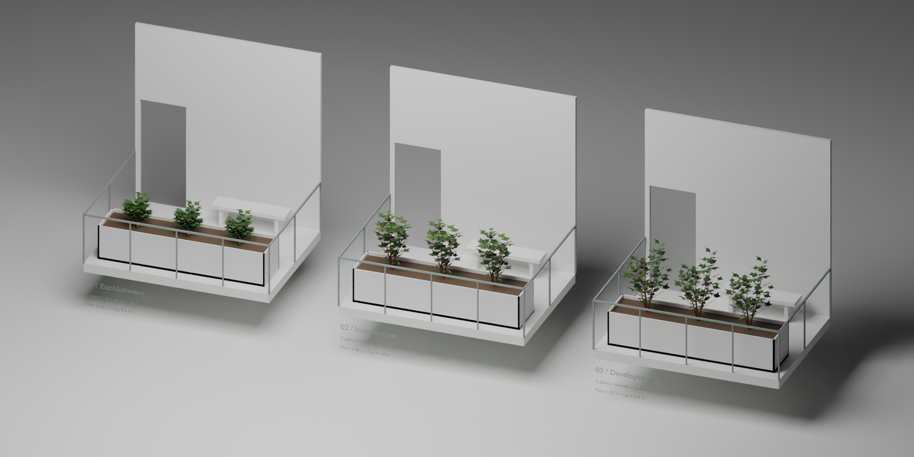
Full image
| Stage | Arrangement | Plant height / m | Crown X x Y / m |
|---|
| 01 | 3 plants / shared crop bed | 0.657 | 0.646 x 0.691 |
| 02 | 3 plants / shared crop bed | 1.400 | 0.782 x 0.806 |
| 03 | 3 plants / shared crop bed | 1.567 | 0.971 x 0.946 |
The plant count is retained across these three study views.
Roselle now has three plants, 1.10 m apart. Its crop bed is retained through the size stages. A Malaysian experiment grew and fruited roselle in 6 L pots over 127 days, averaging 0.803 m height. That supports container culture but does not establish a minimum volume for our taller scenario. Our larger bed remains a test provision, not an optimum.
Modelled container provision
External dimensions and calculated growing-medium capacity. These are proposed provisions, not verified plant requirements. Shared-bed volume is for the whole bed.
| Stage | Holder | Outside size | Medium depth | Medium volume |
|---|
| 01 | Shared bed | 3.60 x 0.85 x 0.75 m | 0.63 m | 1735 L |
| 02 | Shared bed | 3.60 x 0.85 x 0.75 m | 0.63 m | 1735 L |
| 03 | Shared bed | 3.60 x 0.85 x 0.75 m | 0.63 m | 1735 L |
Plant requirements and sources
- Light: Use full sun. A flowering trial needs a record of night lighting as well as daylight.
- Water: Moist, well-drained soil suits cultivation. Deep-rooted drought tolerance does not set the watering interval for a restricted container.
- Roots and soil: Allow the developing root system to grow in a drained medium. NC State describes deep roots; no minimum pot depth is supplied.
- Space and growth: NParks describes a shrub about 1–2 m tall. Plan the full branching outline and access for harvest.
- Season and reproduction: NC State reports short-day flowering, promoted by nights of at least 12 hours. This describes a response, not a confirmed Lagos flowering date.
- Establishment and care: Seed and stem cuttings are possible. Check the plant for root or stem rot and nematode damage where growth fails.
Ixora coccinea LAG-302
Six plants remain in two rows of three at the middle stage. Each has a separate smaller pot.
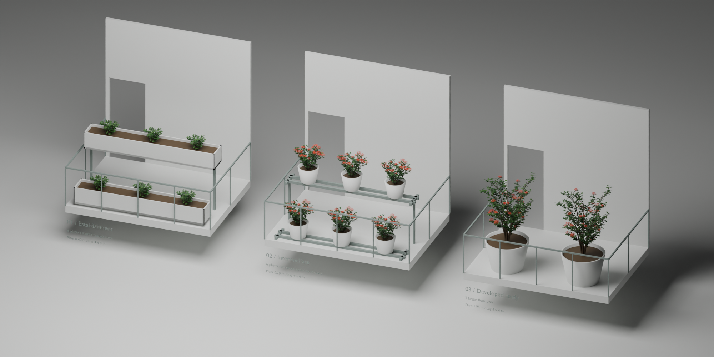
Full image
| Stage | Arrangement | Plant height / m | Crown X x Y / m |
|---|
| 01 | 6 plants / shared trough rows | 0.395 | 0.546 x 0.520 |
| 02 | 6 plants / separate pots / same rows | 0.700 | 0.869 x 0.725 |
| 03 | 2 larger floor pots | 1.949 | 1.415 x 1.398 |
This first bay holds 6 plants. The developed view holds 2. Keeping all original plants requires 3 receiving bays at that density.
Individual middle-stage pots preserve separate rootballs. The first move out of shared soil must happen before roots interlock. The exact transfer point needs a root inspection.
Modelled container provision
External dimensions and calculated growing-medium capacity. These are proposed provisions, not verified plant requirements. Shared-bed volume is for the whole bed.
| Stage | Holder | Outside size | Medium depth | Medium volume |
|---|
| 01 | Shared trough | 3.60 x 0.55 x 0.46 m | 0.34 m | 576 L |
| 02 | Round pot | diameter 0.56 x height 0.42 m | 0.30 m | 36 L |
| 03 | Round pot | diameter 1.16 x height 0.80 m | 0.68 m | 439 L |
Plant requirements and sources
- Light: Use full sun or a position with some afternoon shade. Compare flower production where building shadows cross the plant.
- Water: Maintain moist, drained soil. Do not turn the description of medium rainfall into a fixed irrigation rate.
- Roots and soil: Acidic, organically rich soil is recommended. NC State gives soil pH below 6; alkaline conditions can cause chlorosis.
- Space and growth: The branching evergreen crown can make a hedge. Provide space for its width rather than packing young plants at their nursery size.
- Season and reproduction: Flowers can recur through the year in Caribbean cultivation. Rooted cuttings provide a practical way to compare matching plants.
- Establishment and care: Watch for pale leaves and inspect for sap-feeding pests. Chlorosis needs a root-zone and water check, not an automatic increase in fertiliser.
Ocimum gratissimum LAG-328
One low row keeps tall shoots clear and leaves reachable for harvest. Separate pots at the middle stage.
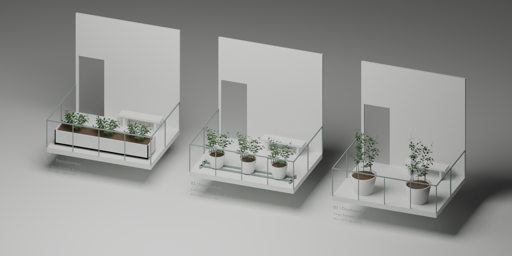
Full image
| Stage | Arrangement | Plant height / m | Crown X x Y / m |
|---|
| 01 | 3 plants / shared trough rows | 0.664 | 1.063 x 0.832 |
| 02 | 3 plants / separate pots / same rows | 1.200 | 1.087 x 1.045 |
| 03 | 2 larger floor pots | 1.914 | 1.063 x 0.840 |
This first bay holds 3 plants. The developed view holds 2. Keeping all original plants requires 2 receiving bays at that density.
Individual middle-stage pots preserve separate rootballs. The first move out of shared soil must happen before roots interlock. The exact transfer point needs a root inspection.
Modelled container provision
External dimensions and calculated growing-medium capacity. These are proposed provisions, not verified plant requirements. Shared-bed volume is for the whole bed.
| Stage | Holder | Outside size | Medium depth | Medium volume |
|---|
| 01 | Shared trough | 3.60 x 0.75 x 0.55 m | 0.43 m | 1032 L |
| 02 | Round pot | diameter 0.64 x height 0.50 m | 0.38 m | 62 L |
| 03 | Round pot | diameter 0.95 x height 0.70 m | 0.58 m | 240 L |
Plant requirements and sources
- Light: RHS recommends full sun. Test the effect of building shade on shoot growth and leaf harvest.
- Water: Use moist, drained soil during establishment. A calendar alone will not show whether a container has dried.
- Roots and soil: The root zone needs drainage. The reviewed sources do not give a container root depth or a validated substrate recipe.
- Space and growth: World Agroforestry describes a perennial herb about 1–3 m tall with a woody base. Leave space for branching after harvest.
- Season and reproduction: Seed and softwood cuttings are propagation options. Flowering and harvest timing depend on the local material and conditions.
- Establishment and care: Harvest frequency changes the growing cycle. Vietnamese cutting schedules are regional production examples, not instructions for Lagos.
Senna alata LAG-343
Container growing is supported by UF/IFAS. Replace the ground destination with larger individual pots.
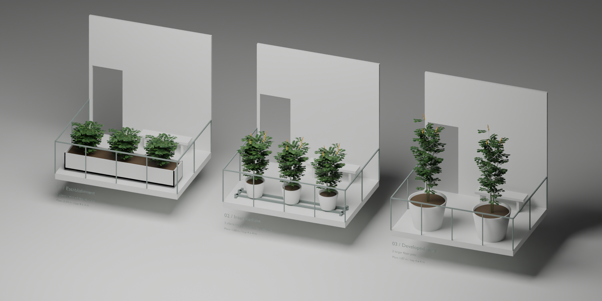
Full image
| Stage | Arrangement | Plant height / m | Crown X x Y / m |
|---|
| 01 | 3 plants / shared trough rows | 0.936 | 1.133 x 1.194 |
| 02 | 3 plants / separate pots / same rows | 1.800 | 1.101 x 1.107 |
| 03 | 2 larger floor pots | 2.872 | 1.050 x 1.142 |
This first bay holds 3 plants. The developed view holds 2. Keeping all original plants requires 2 receiving bays at that density.
UF/IFAS lists Senna for containers. Its general mature spread can be much wider than this catalogue model; full-size growth in our proposed pot is not established.
Modelled container provision
External dimensions and calculated growing-medium capacity. These are proposed provisions, not verified plant requirements. Shared-bed volume is for the whole bed.
| Stage | Holder | Outside size | Medium depth | Medium volume |
|---|
| 01 | Shared trough | 3.60 x 0.75 x 0.55 m | 0.43 m | 1032 L |
| 02 | Round pot | diameter 0.64 x height 0.50 m | 0.38 m | 62 L |
| 03 | Round pot | diameter 1.20 x height 0.90 m | 0.78 m | 543 L |
Plant requirements and sources
- Light: Full sun suits growth and flowering. Keep the crown clear of dense shade from neighbouring plants.
- Water: NParks lists moderate watering and tolerance of wet conditions. This does not establish a need for permanent deep flooding.
- Roots and soil: Provide a moist root zone whose drainage can be checked. Exact root depth remains unresolved.
- Space and growth: A spreading shrub can reach several metres. Allow room for large compound leaves and upright flower clusters.
- Season and reproduction: It mainly reproduces by seed, with suckers possible after damage. Floating pods help move seeds along water.
- Establishment and care: Remove developing pods before they release seed when containing a study plant. Check the surrounding ground after rain.
Cajanus cajan LAG-471
Individual young plants, followed by an early move to the final container. Keep that container as growth continues.
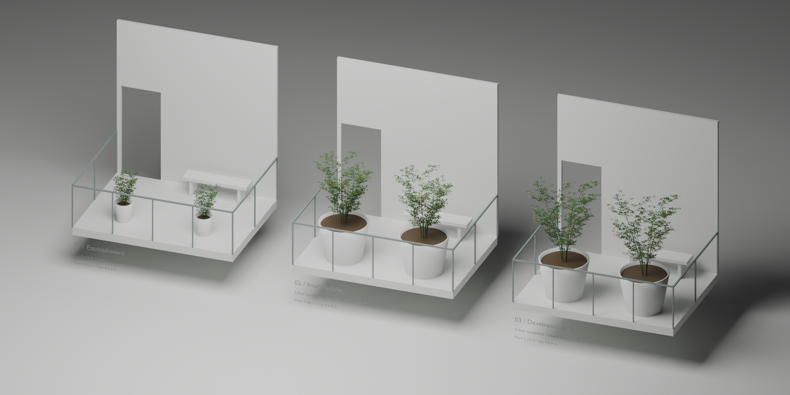
Full image
| Stage | Arrangement | Plant height / m | Crown X x Y / m |
|---|
| 01 | 2 individual young pots | 0.817 | 0.666 x 0.665 |
| 02 | 2 final containers / retained as plants grow | 1.600 | 1.521 x 1.523 |
| 03 | 2 final containers / retained as plants grow | 2.153 | 1.788 x 1.653 |
The plant count is retained across these three study views.
Pigeon pea is the taproot exception. ICRISAT supports transplanting young nursery seedlings into their final growing site. Our early model is a size illustration, not a verified transplant-age seedling. A final container is proposed here; full-size growth and crop yield in this volume remain unverified.
Modelled container provision
External dimensions and calculated growing-medium capacity. These are proposed provisions, not verified plant requirements. Shared-bed volume is for the whole bed.
| Stage | Holder | Outside size | Medium depth | Medium volume |
|---|
| 01 | Round pot | diameter 0.44 x height 0.48 m | 0.36 m | 23 L |
| 02 | Round pot | diameter 1.20 x height 0.95 m | 0.83 m | 577 L |
| 03 | Round pot | diameter 1.20 x height 0.95 m | 0.83 m | 577 L |
Plant requirements and sources
- Light: Use full sun. Slow early growth makes competition from surrounding plants important.
- Water: Established plants tolerate dry conditions. Keep establishment moisture under observation and avoid a saturated root zone.
- Roots and soil: A deep taproot is characteristic; profiles report roots reaching about 2 m in the ground. That is not a required container depth.
- Space and growth: It is a branching shrub that may be managed as an annual or short-lived perennial. The crop duration changes the required space.
- Season and reproduction: Flowers can self-pollinate, while large bees also cross-pollinate them. Cultivar and visiting insects affect this balance.
- Establishment and care: Propagate from seed. Control early competition and record plant survival before judging the final harvest.
Manihot esculenta LAG-752
Individual young plants, then a final crop container retained through growth. Avoid a late move of developing storage roots.
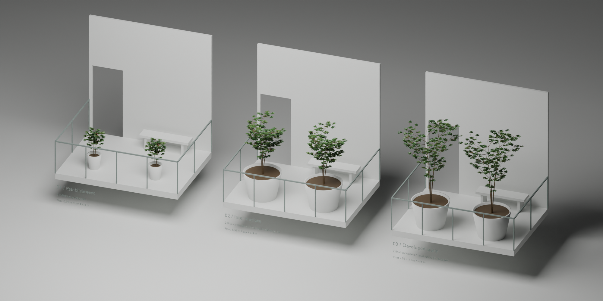
Full image
| Stage | Arrangement | Plant height / m | Crown X x Y / m |
|---|
| 01 | 2 individual young pots | 0.891 | 0.754 x 0.653 |
| 02 | 2 final containers / retained as plants grow | 1.800 | 1.325 x 1.297 |
| 03 | 2 final containers / retained as plants grow | 2.979 | 1.954 x 1.935 |
The plant count is retained across these three study views.
Cassava container culture is supported by NC State. Retaining the receiving pot after an early transfer is a design response to developing storage roots. Productive root volume, harvest access and yield in this container are unverified. This is not proof that cassava cannot be transplanted.
Modelled container provision
External dimensions and calculated growing-medium capacity. These are proposed provisions, not verified plant requirements. Shared-bed volume is for the whole bed.
| Stage | Holder | Outside size | Medium depth | Medium volume |
|---|
| 01 | Round pot | diameter 0.44 x height 0.48 m | 0.36 m | 23 L |
| 02 | Round pot | diameter 1.20 x height 0.85 m | 0.73 m | 508 L |
| 03 | Round pot | diameter 1.20 x height 0.85 m | 0.73 m | 508 L |
Plant requirements and sources
- Light: Full sun is recommended. IITA trims crowding branches in the field bank to improve light and air movement.
- Water: New cuttings need water while they establish. Keep the root zone moist with free drainage; drought tolerance does not replace establishment watering.
- Roots and soil: NParks recommends moist, well-drained sandy loam. Large storage roots need room to expand, but the sources do not define a productive container volume.
- Space and growth: The shrub can grow about 2–4 m tall. Above-ground clearance and root harvest access both need planning.
- Season and reproduction: Propagation uses stem cuttings. Healthy material is important because failed cuttings can be associated with disease.
- Establishment and care: Check regularly for termites, wilting, leaf-colour change and other insect damage. Control competing weeds during establishment.
Murraya paniculata LAG-779
Use individual pots after establishment. The developed study needs open space above the 4 m reference bay.
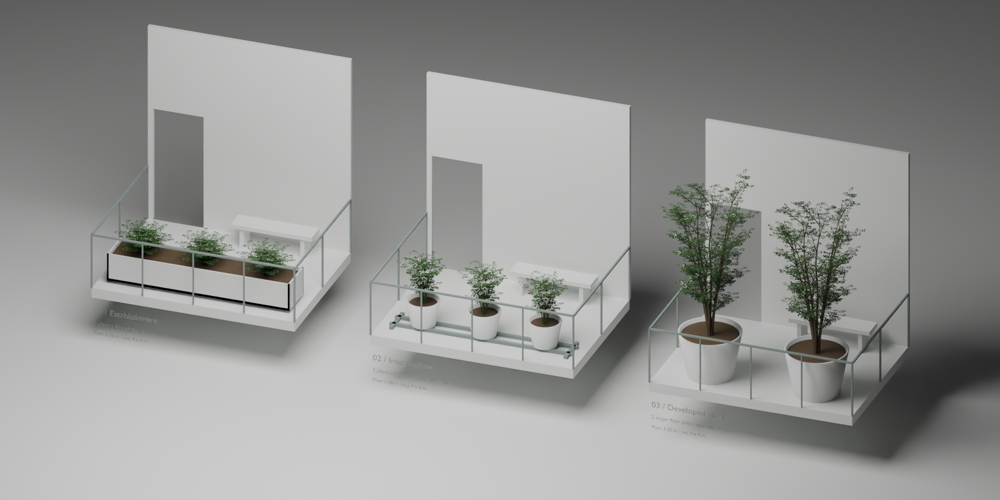
Full image
| Stage | Arrangement | Plant height / m | Crown X x Y / m |
|---|
| 01 | 3 plants / shared trough rows | 0.562 | 1.121 x 1.099 |
| 02 | 3 plants / separate pots / same rows | 1.000 | 0.948 x 0.928 |
| 03 | 2 larger floor pots / open bay above | 3.204 | 1.779 x 1.883 |
This first bay holds 3 plants. The developed view holds 2. Keeping all original plants requires 2 receiving bays at that density.
Murraya container use is listed in indexed UF/IFAS guidance. The original PDF endpoints redirected during checking. The 3.20 m plant plus 0.83 m soil datum reaches 4.03 m: use an open bay above. Do not repeat this mature arrangement under a 4 m soffit.
Modelled container provision
External dimensions and calculated growing-medium capacity. These are proposed provisions, not verified plant requirements. Shared-bed volume is for the whole bed.
| Stage | Holder | Outside size | Medium depth | Medium volume |
|---|
| 01 | Shared trough | 3.60 x 0.75 x 0.55 m | 0.43 m | 1032 L |
| 02 | Round pot | diameter 0.64 x height 0.50 m | 0.38 m | 62 L |
| 03 | Round pot | diameter 1.20 x height 0.90 m | 0.78 m | 543 L |
Plant requirements and sources
- Light: Provide full sun. Test flowering and crown density where part of the hedge sits under a canopy.
- Water: Use moderate watering with a root zone that can be inspected. The profile does not give litres per plant or a dry-season interval.
- Roots and soil: Fertile loam is suitable, with a range of soil reactions tolerated. This does not remove the need to check the proposed medium.
- Space and growth: Unrestricted plants can become small trees; clipped hedges are much smaller. Decide whether the study concerns a hedge or a tree form.
- Season and reproduction: Seed, cuttings and air layering are listed. Fragrant flowers and later fruit need room beyond a tightly clipped outline.
- Establishment and care: Frequent shaping can demand considerable maintenance. Inspect new growth for sap-feeding insects before moving plants between sites.